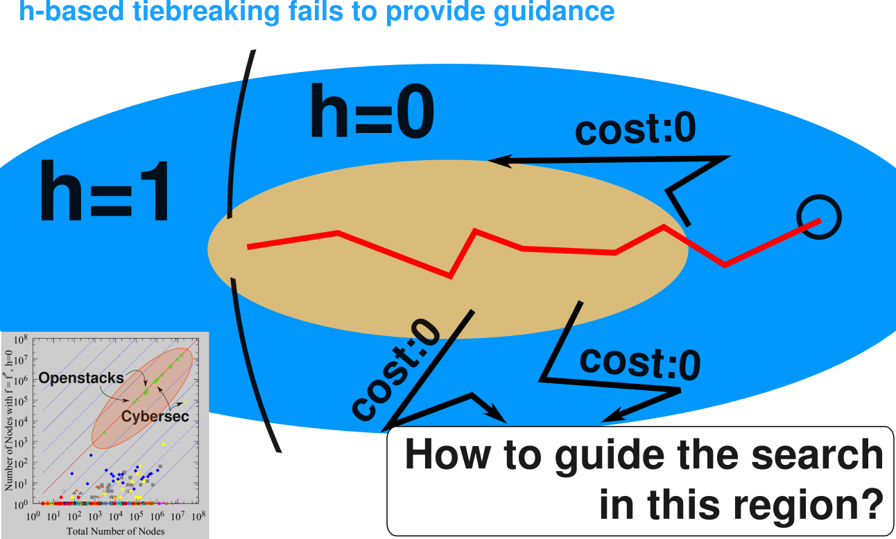

Tie-Breaking in A* as Satisficing Search
Masataro Asai, Alex Fukunaga, The University of Tokyo
15 min
† This paper presents work from Sections 7-8 from a recent journal paper (Asai and Fukunaga 2017). This work has not been previously presented in any conference or workshop.
Made by guicho2.71828 (Masataro Asai)
1 Summary: We propose a new tool to improve/analyse A*
Optimal search and satisficing search are incompatible.
- different algorithms (A* vs GBFS)
- different theoretical requirements (admissibility etc..)
Can we use FF heuristics for optimal search?
- Yes, we can!
2 Optimal Search with A* …
currently, the most prevarent method for optimal graph search is A* algorithm. In A*, a node has g-value, which is the current shortest cost from the initial state, and h-value, which is a result of a heuristic function h, which should be admissible in the optimal search. Their sum, f, is a lower bound of the cost of the shortest path, f*.
In order to prove optimality, A* is required to expand all nodes whose f is smaller than f*. Due to this requirement, A* expands the nodes with the smallest f value each time.
However, this description lacks one important aspect of A*.
3 Optimal Search with A* … w/o Tiebreaking Strategy.
The aspect is the tiebreaking strategy. What happens when more than 2 nodes have the same f-minimum? In such cases, a tiebreaking strategy should select which node to expand.
4 Conventional Wisdom regarding Tiebreaking
How to select from multiple nodes with the same fmin?
| Tiebreaking | |
|---|---|
| Early work | |
| 1968 Hart, Nilsson and Raphael | h-based tiebreaking [ h ] : |
| – selects the least h value | |
| common around 1985 | LIFO tiebreaking [LIFO] : |
| – selects the most recently generated | |
| Recent years… | |
| 2007 Hansen and Zhou | [ h ] "well-known to achieve |
| the best performance" | |
| 2010 Holte | [ h ] "most often done" |
Rule-of-Thumb is [ h ] but it's like a folklore!
There are several conventional wisdoms on the tiebreaking of A*.
In the earliest work, the original paper on A* by Hart, Nilsson and Raphael proposed a strategy of selecting the nodes with the least h value. We call this tiebreaking as h-based tiebreaking, and use the notation surrounded by brackets.
Another important method is LIFO tiebreaking, which expands a node in most-recently-generated-first. It seems to be common already in 1985.
In recent years, we rarely find a detailed description on tiebreaking. It is sometimes said: it's known to perform well or it's common. There are sometimes no mention at all.
Overall, it seems that the current rule-of-thumb is to use h-based tiebreaking.
5 [ h ] is underspecified
What happens if there are still multiple nodes with the same h ?
→ There must be a 2nd Tiebreaking X : denoted as [ h , X ]
Example – A* with [ h , LIFO ] : Selects the nodes with fmin.
- IF multiple nodes have fmin, selects the nodes with hmin (1st tiebreaking).
IF multiple nodes have hmin, select the most recent node (2nd tiebreaking).
(i.e. popping a LIFO queue: always returns exactly 1 node)
| Solver code on github by 2012 Burns et. al. | [ h, LIFO (not documented)] |
| (current) Fast Downward | [ h, FIFO (not documented)] |
However, h-based tiebreaking has a severe problem that it is still underspecified. What happens if there are still multiple nodes with the same h? There should be some further tiebreaking criteria which selects exactly one node among them. In most papers, this kind of detail is not mentioned at all.
We found that the implementation by burns et. al. uses h-based tiebreaking followed by LIFO tiebreaking, and the current fast downward uses h-based tiebreaking followed by FIFO tiebreaking. Both of these are not specified in the paper. In other words, these details are not considered important.
6 In Fact, Tiebreaking is Quite Important
Most of the runtime, search is controlled
solely by the tiebreaking.

←In the standard benchmark sets,
Most nodes have f=f*.
(i.e. Final Plateau,
where the solutions exist)
Tiebreaking controls the most of the search.
However, tiebreaking is actually quite important. We plotted the number of nodes whose f value is equal to f*, versus those with f value less than equal to f*,
In this figure, we can see that the most nodes have the f value equal to f*. We call these nodes as the final plateau.
The final plateau is where the optimal solutions exist. And where all nodes have the same f-value.
Thus, in this plateau, the search is controlled solely by the tiebreaking.
7 Comparing [h,FIFO] and [h,LIFO] per Domain (Instance Set)
Significant performance difference by merely changing the 2nd tiebreaking
The difference occurs only in
Openstacks & Cybersec
LIFO is x10 faster than FIFO
(In other domains the performance is comparable.)
what is the reason behind this? From the domain-wise investigation, we found that this is caused mainly by the Cybersec and Openstacks domains.
We plotted the number of evaluations by each strategy in x-y plot. As we see, their difference is small in most domains except Openstacks and Cybersec.
8 What makes Openstacks & Cybersec Different?
They have many zero-cost actions
Used in many practical applications w/ key resource minimization
Consider a transportation domain w/ fuel minimization.
Assign 0 cost to all actions except drive-truck
Loading packages do not consume fuel.
Openstacks is an application domain from Operations Research (Fink and Voss, 1999)
minimize the # of stacks, 0-cost unless consuming stacks.
Cybersec is also an application domain. (BAMS, Boddy et. al.)
The great talk by Joerg Hoffmann in the last ICAPS!
Zerocost actions makes problems more difficult (W［2］-complete → para-NP-hard) [Aghighi,IJCAI15]
Approaches for zerocost domains: Pearl&Kim (82), Thayer&Ruml(09,11), Cushing(10), Richter(11), Benton(10)
These domains are characteristic by its large number of zero-cost actions.
Addressing the problem caused by zero-cost actions is important because it frequently appears in practial application domains.
First of all, both of these domains originates from industrial applications. Openstacks originates from Operations Resarch. Regarding Cybersec, I hope the listeners remember the great talk by jorg hoffman in the last ICAPS.
Another interesting example is a realistic transportation domain with fuel optimization. In such as setting, the domain will assign 0 to all action costs except drive-truck.
9 Zero-cost actions makes h-Tiebreaking difficult
← A stricter subset of final plateau with f=f*, h=0
In Openstacks & Cybersec,
Almost all nodes have h=0.
⇒ h-tiebreaking has
no effect
⇒search is controlled solely by the 2nd tiebreaking
LIFO or FIFO
Thus, to improve upon LIFO, we should understand these search spaces.
Well, I didn't explained exaclty why these zero-cost made the difference.
These domains are unfriendly to h-based tiebreaking. This is a plot of the final plateau, with differnt definition. This time, not only f is equal to f*, but also h should be equal to 0.
In openstacs and cybersec, almost all nodes are on the x-y line. In other words, at almsot all search nodes, h=0. In these domains, h-tiebreaking has almost no effect.
Thus, to improve upon LIFO, we should understand Final Plateau.
9.1 Understanding the Final Plateau
First of all, this is the traditional understanding of the search space of A*. However, this is actually not the case, because
9.2 Understanding the Final Plateau
in fact, most nodes are in the large final plateau. This is the same whether it is positive or zero-cost. Without proper tiebreaking strategy, the planner has no guidance, because any heuristic estimates are the same almost everywhere.
9.3 Understanding the Final Plateau
In positive cost domains,
In positive-cost domains, the h-based tiebreaking is useful because it provides a gradient toward the goal.
9.4 But when almost all edges are 0-cost…

However, in zero-cost domains, almost all h values are 0, and h-based tiebreaking is useless. The problem is, how can we give a useful guidance in such a region?
10 A* behavior revisited
10.1 A* behavior revisited
10.2 A* behavior revisited
10.3 A* behavior revisited
- The order of expansion within each plateau does not affect the optimality of the solution
- Within each plateau, the path to optimal solutions can be arbitrary longer
- We are runnning a satisficing search on each plateau
11 Reinterpret A∗ as iterations of satisficing search on plateaus:
- A* $[ f, h, \text{fifo} ]$: Performing GBFS [h, fifo] on each plateau(f)
- A* $[ f, \text{fifo} ]$: Performing a blind breadth-first search [fifo] on each plateau(f) and therefore slower
while true satisficing_search( plateau(f)) if plateau (f) is SAT; then return solution else Increase f
11.1 A* as satisficing search
while true satisficing_search( plateau(f)) if plateau (f) is SAT; then return solution else Increase f
11.2 A* as satisficing search
while true satisficing_search( plateau(f)) if plateau (f) is SAT; then return solution else Increase f
11.3 A* as satisficing search
while true satisficing_search( plateau(f)) if plateau (f) is SAT; then return solution else Increase f
11.4 A* as satisficing search
while true satisficing_search( plateau(f)) if plateau (f) is SAT; then return solution else Increase f
Implication:
- Any complete satisficing technique can be embedded in optimal planning
- Results are optimal as long as f is admissible
12 Using some satisficing techniques for optimal planning
- Standard A*
- $[f, h,$ * $]\;$where * is one of LIFO, FIFO, Random
- Tiebreak with unit-cost heuristics $\hat{h}\;$: treats every edge costs as 1 (Previously used for LAMA)
$[f, \hat{h}, * ]$, $[f, h, \hat{h}, * ]$– large overhead for $\hat{h}^{\text{LMcut}}, \hat{h}^{\text{M&S}}$
Purpose: to see pure improvements by
- Tiebreak with unit-cost inadmissible heuristics $\hat{h}^{FF}$
- $[f, \hat{h}^{FF}, *]$, $[f, h, \hat{h}^{FF}, * ]$– cheaper, non-path-optimal heuristics
- Combined with random depth tiebreaking [Asai, AAAI16]
- $[f, \hat{h}^{FF}, \langle d \rangle$, * $]$
13 Evaluation (domains)
- IPC1 Instances (1104 instances)
- Zero-cost domains (620 instances, 28 domains)
- Modified IPC1 optimal track instances
- Assign 0 cost to all actions except one
- which consumes a realistic key resource. For example,
cutconsumeswoodin Woodworkingdrive-truckconsumesfuelin Driverslog (transportation domain)- etc..
1 – IPC : International Planning Competition
Finally, the experimental evaluation. Along with the original IPC instances, we introduce Zero-cost domains, which are the instances we assigned cost 0 to all actiosn except one.
The one which has a positive cost represents a realistic key resource, such as wood, fuel or electricity.
We created 620 zerocost instances consisting of 28 domains.
14 Evaluation ($h=\text{LMcut}$, Zerocost domains)
5min, 4GB
| ＊=FIFO | ＊=LIFO | ＊=Random | |
|---|---|---|---|
| $[f,h,*]$ | 256 | 279 | 261.9 |
| $[f,h,\langle d \rangle,*]$ | 284 | 264 | 288.1 |
| $[f,\hat{h},*]$ | 295 | 303 | 301.0 |
| $[f,h,\hat{h},*]$ | 305 | 309 | 305.9 |
| $[f,\hat{h}^{FF},*]$ | 337 | 340 | 341 |
| $[f,\hat{h}^{FF},\langle d \rangle,*]$ | 340 | 342 | 344.3 |
| (+80) | (+60) | (+80) |
15 Evaluation ($h=\text{M&S}$, Zerocost domains)
5min, 4GB
| ＊=FIFO | ＊=LIFO | ＊=Random | |
|---|---|---|---|
| $[f,h,*]$ | 280 | 301 | 287.7 |
| $[f,h,\langle d \rangle,*]$ | 302 | 288 | 308.1 |
| $[f,\hat{h},*]$ | 308 | 305 | 307.3 |
| $[f,h,\hat{h},*]$ | 307 | 306 | 307.8 |
| $[f,\hat{h}^{FF},*]$ | 336 | 331 | 337.9 |
| $[f,\hat{h}^{FF},\langle d \rangle,*]$ | 337 | 333 | 337.6 |
| (+50) | (+30) | (+50) |
16 Simple Dynamic Configuration for Overall Performance
$[f=g+h, \hat{h}^{FF}]$— Computing 2 different heuristics
- Only beneficial when the plateau is huge (especially the domain contains zerocost)
- Let's disable it when this is not the case
IPC+Zerocost results
| Single heuristics | LMcut | M&S |
|---|---|---|
| A $[f,h,\text{lifo}]$ | 844 | 797 |
| B $[f,h,\langle d \rangle,\text{lifo}]$ | 839 | 775 |
| Multi heuristics | LMcut | M&S |
| C $[f,\hat{h}^{FF},\langle d \rangle,\text{Random}]$ | 906.2 | 794.4 |
| Dynamic Configuration | LMcut | M&S |
| If zerocost actions exist: C ; Else B | 911.9 | |
| If zerocost actions exist: C ; Else A | 832.3 |
17 Completeness of A* on Infinite Graph
Dechter and Pearl (1985):
- Results do not apply to zerocost domains
- Turned out, conditions for completeness depends on the tiebreaking
(P1) If any plateau(f) for f < f^∗ is infinite, then A^∗ does not terminate.
(P2) Assume plateau(f) is finite ∀ f < f^∗:
- Completeness depends on tiebreaking on plateau(f*)
17.1 Completeness of A* on Infinite Graph
(P2) Assume plateau(f) is finite ∀ f < f^∗:
Completeness depends on tiebreaking on plateau(f*)
More specifically, the completeness of satisficing search algorithm used for tiebreaking
| FIFO [f, fifo] | Complete with a finite outdegree below the minimum solution depth |
| → because Breadth-first search [fifo] requires it | |
| LIFO [f, lifo] | Complete when plateau(f*) is also finite |
| → because Depth-First Search [lifo] requires it | |
| Random Order [f, ro] | Probabilistically Complete |
| → because [ro] is Prob. Complete [Valenzano AAAI16] |
- We can also carry the completeness proof over to optimal search!
18 Conclusion & Future Work
- A* as a sequence of satisficing search on each plateau
- Demonstrated the use of inadmissible heuristics for optimal search
- Leveraged the completeness proof for satisficing search for optimal search
- Many potential extensions
- Use plateau-limited macro actions (cf. Marvin, but different purpose)
- Plateau-limited monte-carlo random walk (cf. Arvand)